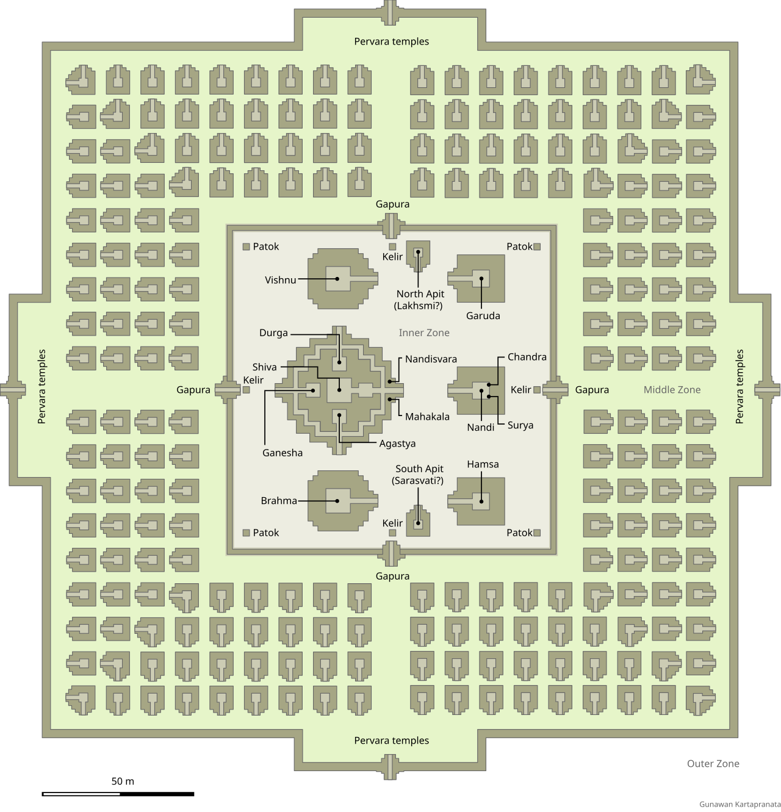

🚂 Spostamenti
Grab/Tour privato
Meglio nel pomeriggio
📸 Attività
Visita al tempio Pranbanan al tramonto
Orario apertura:6:30 - 17:00 (gli ingressi chiudono un'ora prima). Durata tragitto da Yogyakarta circa 2h - Durata visita circa 4h
📸 Attività
TICKET
None
📜 Curiosità
Storia del tempio
Il nome Prambanan viene attribuito al tempio dalla popolazione locale, per la sua ubicazione: si trova infatti nella pianura di Prambanan, una fertile terra vulcanica collocata tra due coppie di vulcani gemelli – il Sundoro-Subing e il Merbabu-Merapi – e tra i due fiumi Progo e Elo.La costruzione del tempio Prambanan comincia nel IX secolo d.c. per opera del re Rakai Pikatan – appartenente alla dinastia induista Sanjaya – che volle dimostrare la grandezza della sua casata e non sentirsi meno importante della dinastia buddista Sailendra, costruttrice del Borobudur.. Nel tempio si svolgevano la maggior parte delle cerimonie e dei sacrifici religiosi del Regno di Mataram, la cui corte e centro urbano si trovavano nelle sue immediate vicinanze.Dopo 80 anni, il tempio fu misteriosamente abbandonato: la corte giavanese fu spostata a Giava orientale dal sovrano Mpu Sindok, forse per via di una devastante eruzione del limitrofo vulcano Merapi. Molti degli edifici crollarono in seguito a un forte terremoto nel XVI secolo. Il complesso si sviluppa su una pianta quadrata ed è costituito da tre zone, che fanno riferimento alla tradizione architettonica hindu: una esterna alle mura di cinta, che simboleggia il Bhurloka, il regno più basso dei comuni mortali; quella centrale, che conteneva a suo tempo i piccoli e numerosi santuari, e rappresenta il Bhuvarloka, il regno di mezzo dei santi, occupato da saggi, asceti e divinità minori;l’area interna dove si sviluppano i templi principali che raffigura Svarloka, il regno sacro, riservato agli dei.Originariamente il Prambanan era composto da 240 templi.La struttura più alta e grande del complesso di Prambanan è dedicata a Shiva: misura 47 metri di altezza e 34 metri di larghezza, risulta ben visibile persino a lunga distanza. Il tempio è circondato da gallerie i cui bassorilievi scolpiti sulle pareti, raccontano la storia del Ramayana, il poema epico della tradizione hindu.
🛏️ Pernottamenti
H3 - KHAS Malioboro Hotel
Jl Gadean No 3, Gondomanan, 55122 Yogyakarta, Indonesia
Extra
📍Posizione hotel
Visualizza su Google Maps
Guarda o carica le foto del viaggio qui sotto:
Vai all'album su Google Foto